雷の経験値を積む。 [梅吉]
15日（土）は一日中強風でした。
家の周りの木がびゅうびゅう鳴って昨年9月の台風を思い出しちゃいましたよ。
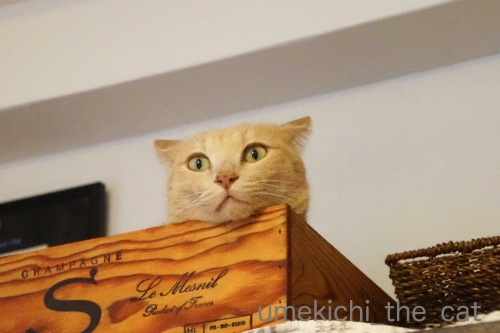
強い風に警戒モードの梅吉さん。
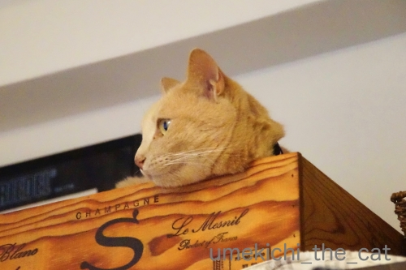
夕方頃からは滝の様な豪雨が！一瞬周りの家が見えなくなりました。
さらに落ち着きがなくなる猫w
この日はお出かけ予定だったのですがちょっとしたアクシデントで家にいることに。
屋外イベントだったので出かけなくて良かった。
出かけていたらずぶ濡れになるところでした(⌒-⌒;
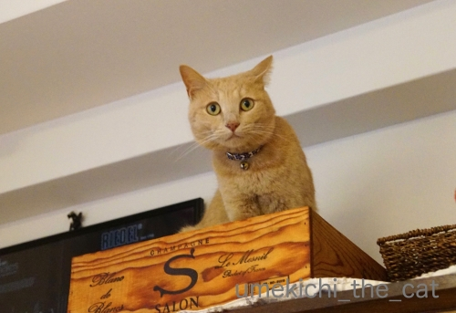
激しい雨とともに遠くの方で雷鳴が。
もう居ても立っても居られない様子の猫さん。
少しの間うろうろしてましたがそのうち疲れたのか
箱ベッドに戻って寝始めました。
豪雨や雷、去年の出来事で少し鍛えられたかな。
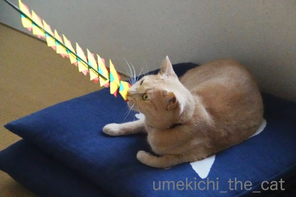
強くなった（？）のはこれのせいもあるかしら・・・
ガブッとしているのは
近所の神社で授与していただいた雷と魔除けのお飾りです。
差し出したらかじりつく。期待を裏切らない漢、梅吉です(๑˃̵ᴗ˂̵)و
あおくんが早速エントリーしていたAIXIAの極楽ねこカレンダー。
もちろん梅吉もエントリーしましたよ＾＾
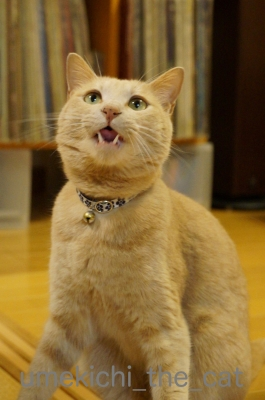
今年は「かつお祭り」の一枚で。
採用されるといいなぁ・・・
その極楽ねこカレンダー、今年のはそろそろこてつくんの登場です＾＾
https://www.aixia.jp/gokuraku/d.php?id=0000035775&s=1&ss=5a94d77e62985f79cb809750a64f2f12
上記のリンクが梅吉のページになります。
今の所得票二票！おっとと私、身内の組織票です(*>艸<)(*>艸<)
 ↑ガブッと一押し↑
↑ガブッと一押し↑
土曜日お出かけしなかったのは網戸の張替えをしていたおっとが指をケガしたため。
スパッと爪の脇の肉片を切り落としたらしい。きゃ〜。
（傷は小さいのでご心配には及びませんm(_ _)m）
相当痛かったらしく一晩眠れなかった様子、で翌日病院に行きました。
そこで処方された治療薬のスプレー。
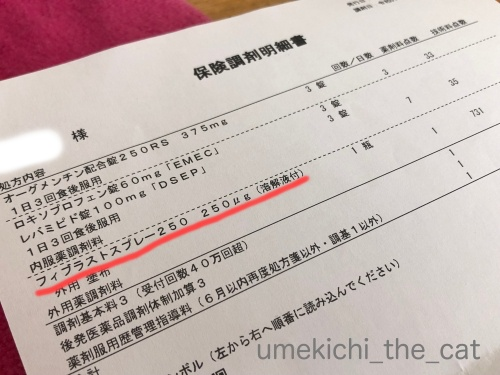
赤線を引いた所「フィブラストスプレー」。肉を盛る？肉が再生するお薬？？。
それって最先端の再生医療の治療で
細胞から培養したなんちゃらをこんちゃらして手術が必要ってレベルだと思ってたのですが
スプレーでそれに近い治療が出来るらしい。
お薬の説明は
『傷が治る過程で重要な働きをしている血管内皮細胞、
線維芽細胞などに存在するFGF（線維芽細胞増殖因子）受容体に特異的に結合し、
血管新生作用や肉芽形成促進作用などを示すことにより、
褥瘡、皮膚潰瘍に対して治療効果を示します。
通常、褥瘡（床ずれ）や皮膚潰瘍の治療に用いられます。』って。
（くすりのしおりから引用しました）
『血管新生作用や肉芽形成促進作用』！！！
いや、驚いちゃいました。
家の周りの木がびゅうびゅう鳴って昨年9月の台風を思い出しちゃいましたよ。
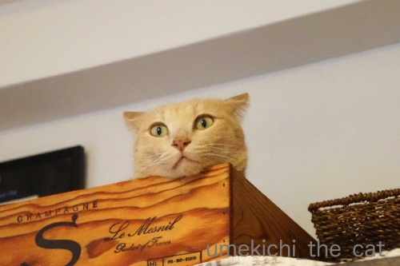
強い風に警戒モードの梅吉さん。
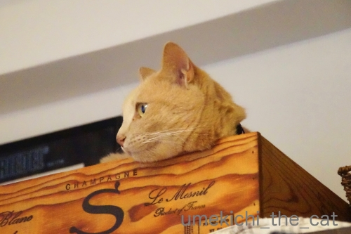
夕方頃からは滝の様な豪雨が！一瞬周りの家が見えなくなりました。
さらに落ち着きがなくなる猫w
この日はお出かけ予定だったのですがちょっとしたアクシデントで家にいることに。
屋外イベントだったので出かけなくて良かった。
出かけていたらずぶ濡れになるところでした(⌒-⌒;
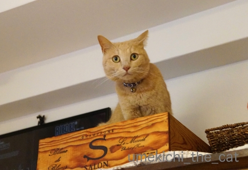
激しい雨とともに遠くの方で雷鳴が。
もう居ても立っても居られない様子の猫さん。
少しの間うろうろしてましたがそのうち疲れたのか
箱ベッドに戻って寝始めました。
豪雨や雷、去年の出来事で少し鍛えられたかな。
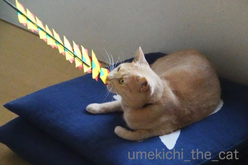
強くなった（？）のはこれのせいもあるかしら・・・
ガブッとしているのは
近所の神社で授与していただいた雷と魔除けのお飾りです。
差し出したらかじりつく。期待を裏切らない漢、梅吉です(๑˃̵ᴗ˂̵)و
あおくんが早速エントリーしていたAIXIAの極楽ねこカレンダー。
もちろん梅吉もエントリーしましたよ＾＾
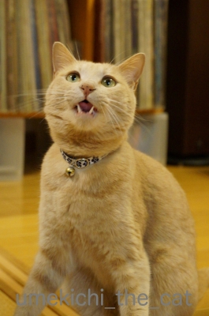
今年は「かつお祭り」の一枚で。
採用されるといいなぁ・・・
その極楽ねこカレンダー、今年のはそろそろこてつくんの登場です＾＾
https://www.aixia.jp/gokuraku/d.php?id=0000035775&s=1&ss=5a94d77e62985f79cb809750a64f2f12
上記のリンクが梅吉のページになります。
今の所得票二票！おっとと私、身内の組織票です(*>艸<)(*>艸<)
土曜日お出かけしなかったのは網戸の張替えをしていたおっとが指をケガしたため。
スパッと爪の脇の肉片を切り落としたらしい。きゃ〜。
（傷は小さいのでご心配には及びませんm(_ _)m）
相当痛かったらしく一晩眠れなかった様子、で翌日病院に行きました。
そこで処方された治療薬のスプレー。
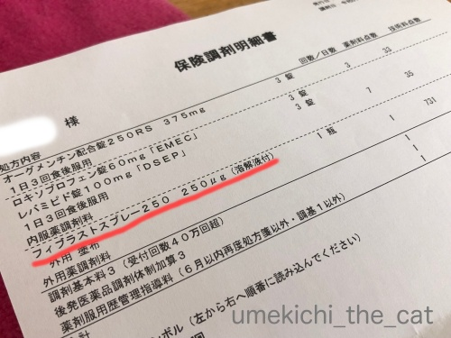
赤線を引いた所「フィブラストスプレー」。肉を盛る？肉が再生するお薬？？。
それって最先端の再生医療の治療で
細胞から培養したなんちゃらをこんちゃらして手術が必要ってレベルだと思ってたのですが
スプレーでそれに近い治療が出来るらしい。
お薬の説明は
『傷が治る過程で重要な働きをしている血管内皮細胞、
線維芽細胞などに存在するFGF（線維芽細胞増殖因子）受容体に特異的に結合し、
血管新生作用や肉芽形成促進作用などを示すことにより、
褥瘡、皮膚潰瘍に対して治療効果を示します。
通常、褥瘡（床ずれ）や皮膚潰瘍の治療に用いられます。』って。
（くすりのしおりから引用しました）
『血管新生作用や肉芽形成促進作用』！！！
いや、驚いちゃいました。

カフェオレ色の梅吉

梅吉 2023年8月10日 永眠


梅吉と出会った譲渡会

犬猫の理由なき殺処分ゼロ
妄想広告
UMEKICHI 光

爆発的に早い！
時々攻撃的！
Thanks to Mr.Boss365
爆発的に早い！
時々攻撃的！
Thanks to Mr.Boss365

梅吉さんのイカ耳から始まって夫様の怪我まで緊張感のあるお話でした。
極楽ねこは投票しておきましたが、指肉が生えてきたのかが気になります。
by zombiekong (2019-06-17 00:42)
梅吉さん、雷、こわいよねー。大変でした。
極楽ねこ、投票してきましたよ！
4票ってことはご夫妻とzombiekongさんと私か(^_^;)
あとで、メインPCと会社PCからも入れておきますねー。
ご主人の怪我、聞いているだけ、お尻がムズムズします。
とはいえ、どう治っていくのか、今後の経過もお聞きしたいです。
by ChatBleu (2019-06-17 05:37)
最初の梅ちゃんの写真
めちゃめちゃ可愛い〜〜(^^)
by チャー (2019-06-17 06:42)
私のところにもお誘いのメールが来ましたので
近々応募する予定です＾＾
by ぽちの輔 (2019-06-17 06:44)
肉片を切り落とした。読んでるだけでぞっとします。
お大事になさってください。
by ニコニコファイト (2019-06-17 07:13)
ニコも投票しました^^
by ニコニコファイト (2019-06-17 07:15)
関東も土曜日の夜にいきなりの豪雨に雷で
うちのお猫様たちもイカ耳になってました(⌒-⌒; )
梅吉さん、警戒はしてますがパニックにはなってないとは
さすがです=(^.^)=
夫さん、お大事にしてくださいね(_ _)
しかし、最近はすごいスプレーがあるんですねぇ(°_°)
by ニッキー (2019-06-17 07:31)
梅吉さん、豪雨に警戒ですね！
梅吉さんに1票ガブッとしておきました(^^)
by ma2ma2 (2019-06-17 07:51)
【スパッと・・・肉片を切り落としたらしい】
ひょー！(Φ0Φ;)
すごい最新の治療薬で早く治りますように！
by あとりえＳＡＫＡＮＡ (2019-06-17 08:05)
梅吉さん！漢ですもの♪
強くなったんですよね(#^.^#)
医療の進化！すごいですねぇ～
これで早く治りますように！
by きぃ (2019-06-17 08:44)
何事も経験重ねるの大事なんですなー！
組織票に、一票加担しました(^｡^)
by よーちゃん (2019-06-17 09:16)
急に土砂降りになりましたよねーー。
うちのは平気でお昼寝していましたけど(笑)
もう去年のような災害はコリゴリです...
極楽猫！私もポチっとしてきました♪
うちも応募写真探さねば(〃￣ω￣〃ゞ
肉片をスパっと切り落としってーーー(/ω＼*))
指先って痛いでしょうね｡ﾟ(ﾟ*´Д⊂
でもイマドキはいいお薬があるのですね！
お大事になさってください☆
by カトリーヌ (2019-06-17 09:55)
こんにちは。
梅吉君の箱ベットの顎乗せイカ耳は良い写真です。
ウロウロのお疲れは半端ではないと思います。小生猫隠れて出て来ません。
「お飾り」効果？遊び道具になってますね（笑）
「フィブラストスプレー」初めて知りました。
ちょっと違いますが、以前、メスでカットされ切り口を縫わない治療をされました。
細胞が自然に再生され、傷跡も残りにくいと説明？肉・皮膚が盛り上がる感じ？
昔の刀傷の治療と同じで「自己細胞で再生」みたいです。
「フィブラストスプレー」再生の触媒的な役割をする感じみたいですね。
おっとさん、お大事にです。！？(=^･ｪ･^=)
by Boss365 (2019-06-17 11:55)
一枚目のイカ耳、おめめがじゃっかんきょどってる梅吉くんの顔、可愛い^^
はい！もちろん投票してきましたよ〜^^
みんな採用されると良いね〜〜^^
組織票バンザイなのだｗｗ
だんなさま、その後どうですか？
はやく完治するといいな。
最先端の再生医療って聞くと、めちゃめちゃ医療費かかりそうな印象！！
by リュカ (2019-06-17 17:28)
うちの猫も雷が大嫌いで、側から離れませんでした。耳もそっくりです(^_^;)
肉片を切り落とした・・・驚きです。
早く治りますように！
by kou (2019-06-17 18:53)
『ロボットではありません』ので梅吉さんに、
1票を投じました（笑）
すでに12票になってます。
みんな採用されると嬉しいですね（笑）
ご主人様、災難でした。
10年前、娘もカッターでバッサリやりました。
傷がかなり深く、大変でした。
『肉芽形成促進作用』なる、
今時の凄い薬があれば良かっただろうに！
by kiki (2019-06-17 20:02)
風きつかったですね。うちはベランダのサンダルが片方風で飛ばされてしまいました( ;∀;)
by palpal (2019-06-17 20:35)
わ～っおっとさん、大丈夫ですか？？
基本血が苦手、ケガした人の手当てをしていて私が気を失いそうになったことがあります^^;
早く治って梅吉さんと思い切り遊べますように。
axiaの季節ですね！
今年はど～しようかな・・・。
梅吉さんはかわいい牙で勝負なのですね！
また猫父と一枚ずつ応募してどちらが採用されるか戦うことにしましょうかね～(^▽^;)
強風の日、こてつもず～っとイカ耳でした(≧▽≦)
by ゆきち (2019-06-17 21:04)
風の音に敏感に反応していますね。
お目目が真ん丸。
投票しました。
我が家も案内のメールが来ました＾＾
by riverwalk (2019-06-17 21:18)
週末の低気圧、ちょっとした台風でしたね。
梅吉さんも心配だったことでしょう。
おっとさんのお怪我、うへぇ痛そう。
最近の治療薬、よく分かりませんが（本当によく分かってませんが。^^;）すごいですね！早く良くなるといいですね。
一票入れました！ ^^)
by yes_hama (2019-06-17 21:46)
一枚目は梅吉さんの生首だニャ（ﾟ□ﾟ）
一票入れといたニャ。
by 英ちゃん (2019-06-17 23:24)
梅さま、イカ耳炸裂^^;
箱ベッドもオサレーですね。
しかし・・・指イタイイタイ・・・
すぱっと！？肉片！？ゾゾっとしました。
しかし今はいろんな薬があるのですね！
お肉がもりっと、元に戻りますよう。
破傷風には気をつけてくださいね。お大事に。
by Ja-Kou66 (2019-06-17 23:27)
うめきちさん元気そうやね！
by じゅらまろ (2019-06-18 15:04)
なんちゃらをこんちゃらするなんて、凄すぎて、こんちゃらがっちゃらになってしまいそうですね！
by 小松達也 (2019-06-18 17:44)
神戸は雷ならなかったのですが、大阪方面は一部ですごかったようですね。
梅吉さん魔よけのお守りパワーで梅吉さん自身もパワーアップした？
いずれにしても猫さんは雷鳴は苦手かもです。
AIXIAの極楽ねこカレンダー、もうそんな時期なのですね。
うちは傍観者で満足しそうです。
by marimo (2019-06-18 21:19)
梅吉さんにガブッと！！
by 50oyaji (2019-06-18 23:32)
zombiekongさん＞
肉生え（笑）スプレー後湿潤パットを貼って治療中ですw
可愛い顔のついた肉が育っているといいなぁ（違）
ChatBleuさん＞
雷が鳴ると人間の傍にもよってきますが
テレビの後ろに隠れようとしますw
窓際だから余計に光ったり轟音だったりすると思うんだけどww
早速の組織票ありがとうございまーす＾＾
着々と組織票を伸ばしている模様です。
おっとの指はただいま湿潤治療中。
パッド貼っているので（５日間くらい貼りっぱなしでもOKなんですって）
傷口にお目にかかってません。
小さな指が生えてきてないかちょっと期待してます（これも違）
チャーさん＞
イカ耳梅吉ですw
ビックリまなこも良いでしょ〜0(≧▽≦)0
ぽちの輔さん＞
どんなお写真で応募されるのかしら♪
楽しみでーす＾＾
ニコニコファイトさん＞
組織票を投じていただきありがとうございますm(_ _)m
肉片、怪我したところに落ちてたんですってーーー！！
（ぞっとするお話追加w）
ニッキーさん＞
雷雨の雲は関西から関東へ移動していったのですね。
イカ耳、大好きなので見ているのは楽しいですが
イカ耳状態の猫様は色々必死で大変なんですよねー。
そう思うと気の毒ではありますが・・・
心の内を想像するとやっぱり楽しい(*>艸<)
おっとの手の傷口からは新しい指が生えてきて・・・ないですwww
ma2ma2さん＞
災害に対する心構えは我が家では
梅吉が一番出来ているかもしれませんw
投票ありがとうございますm(_ _)m
あとりえSAKANAさん＞
怪我した場所には肉片が落ちてたみたいですよ・・・=͟͟͞͞ ( ꒪౪꒪）
傷はただいま湿潤治療中。
パッドを貼りっぱなしでじっと我慢のようです(´▽｀)
きぃさん＞
そうですよね！強い４ちゃいになったのですよねー＾＾
医療の進歩、
しょっちゅう膝っ小僧を擦りむいていた子供時代に欲しかったですw
よーちゃん＞
まだまだ４ちゃい、
これからどんどんいろんな経験値を積みますよー＾＾
組織票、ありがとうございましたm(_ _)m
カトリーヌさん＞
梅吉は消防施設点検の警報音は全然平気なのに
自然の物音はとっても気になるようですよ。
炭酸の「プシューッ」って音も最近苦手になってきました。
梅吉の中での恐怖の基準がいまいちわからないwww
梅吉への清き一票、ありがとうございます！
みんな一緒にカレンダー採用されたいですね＾＾
おっとの手の傷、縫うこともなく小さいのですが・・・
指先って神経が集まっているのかなぁ、痛かったみたいです。
私はしょっちゅう包丁で手を切ってますが
あまり痛くない・・・
私のは単に慣れ？？？
Boss365さん＞
イカ耳写真、アングルが悪いですがにゃま首でもあります＾＾
怖いときはすももちゃんのように隠れて出てこないのが一番ですよ。
すももちゃん賢い！
梅吉は挙動不審になってそれはもうあちこちうろうろして。
見ている方が落ち着かなくなりますw
あれでは体も気持ちも疲れますわwww
フィブラストスプレー、しょっちゅう転んで
膝っ小僧に傷を作っていた子供時代に欲しかった・・・
子供時代の傷今でも残ってますよ(⌒-⌒;
リュカさん＞
そうそう！きょどーふしん時の顔って可愛いのよね。
うろうろする姿も腰を下げて猫じゃない生物っぽくてねー。
梅吉は真剣なんだろうけど笑っちゃいましたw
カレンダーへの投票、ありがとうございます！
さてさて、今年の結果はどうなることやら。
肉が生えてくるスプレー（笑）一回病院で「シュッ」としただけなのに
診療報酬の点数が一つだけ飛び抜けてました。
保険外診療だったらワンプッシュ数千円！？
kouさん＞
人間を頼ってくる可愛い子だったのですねー！
梅吉は挙動不審でひたすらうろうろですw
最終的にはテレビの裏かベッドに下に隠れちゃいます(⌒-⌒;
頼られないのはちょっと複雑ですwww
kikiさん＞
その後ロボットではないみなさんにご協力いただいて
着々と票を伸ばしております＾＾
毎月のように誰かのニャンコが登場するとうれしいなぁ。
お嬢さんもカッターで負傷経験ありでしたか。
力を入れながら使うことが多いからかな。
切るときはすっぱりいってしまうことが多いようですね。
『肉芽形成促進作用』、私は膝を擦りむきがちだった
子供時代に欲しかったです (｡-_-｡)
palpalさん＞
サンダルが飛ぶとは相当です!
うちはずぶ濡れになってて翌日履いた時に
「ぐちゃ〜」って水分がにじみ出てきてましたorz
ゆきちさん＞
指を切っただけでも不自由そうなおっとを見ていて
「手を固定されているゆきちさんは大変な思いをされているんだな」
と思っておりました。
おっとのほうは肉盛りスプレーの効果か回復してきておりますが
今朝は怪我した箇所をぶつけて悶絶しておりましたw
アイシアカレンダーは今年もご夫婦対決のご様子！
フォトジェニックなこてつくんのお写真、楽しみにしております♪
riverwalkさん＞
アイシア、今年はちびちゃんの写真も投稿できますね〜＾＾
仲良くなったら心温まる２にゃんさんの寄り添うお姿も・・・
どんなお写真を応募されるのか楽しみです！
yes_hamaさん＞
週末の風、
アズ氏はびっくりお目目で過ごされたのでしょうか＾＾
おっとの怪我、指先ってたくさん神経が通っているのでしょうか。
相当痛そうでしたよ〜。
痛み止めと化膿止めを飲みながら現在は自己湿潤治療中です。
最近の怪我はじゅくじゅくさせて直すらしいですよ。
梅吉への潔き一票、ありがとうございますm(_ _)m
英ちゃんさん＞
そうなんです！アングルがイマイチなんですけどにゃま首ですw
梅吉への潔き一票、ありがとうございますm(_ _)m
組織票、続々といただいております！
Ja-Kou66さん＞
箱ベッド、中身も美味しくてねーと言いたいところですが
箱だけ買いましたよw
冬場は入らないのですが夏になると入ってます。
ワインの木箱、通気性が良いのでしょうか＾＾
おっとの指、怪我した場所に肉片が落ちていたらしいです・・・きゃ〜！
医療の進歩ってすごいですね！
肉が再生するスプレーと聞いて小さな指が生えてくる想像しちゃいましたwww
じゅらまろさん＞
おっひさしぶり〜！
幼い頃みたいに無茶しなくなりましたが梅吉は元気、元気ですよ(^_－)☆
marimoさん＞
同じ関西でも結構お天気は違いますよね〜。
大阪市内でもミナミとキタでは違ったりするし。
ほとんど怖いもののない梅吉ですが
風の音と雷の音は苦手ですw
この二つだけは幼い頃から変わってません。
カレンダー応募、毎年のことなのでもう恒例行事です(≧▽≦)
採用されると「来年いいことあるかも♪」なんて思ってます＾＾
50oyajiさん＞
ガブッと！！ありがとうございます＾＾
by ちぃ (2019-06-19 18:05)
梅吉しゃまに1票！あれ？私も組織票！？www
警戒モードのお顔が私には萌えポイント高し！！
あの強風にゲリラ豪雨は恐怖を感じるよね…
最近は季節関係なく来るから、梅吉しゃまの様に警戒心は忘れてはなりませぬ！
ね？梅吉しゃま！危険を察知しておかーさんにお知らせしてね(^^)b
by くつしたにゃん (2019-06-21 08:57)